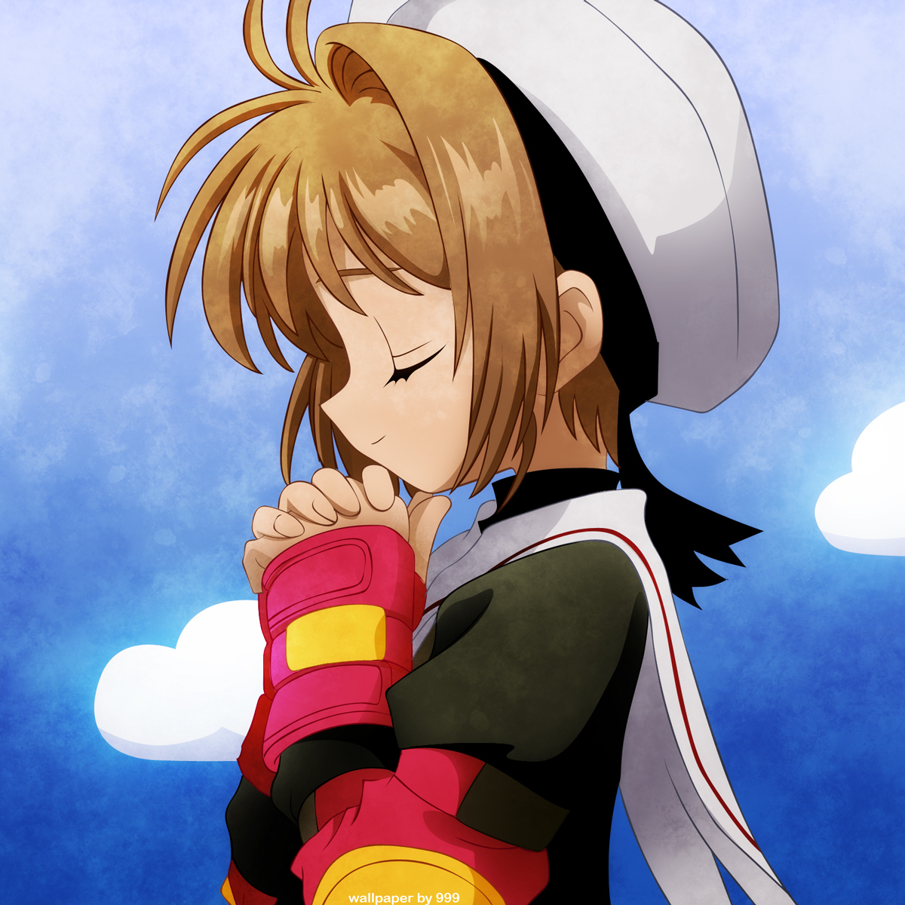
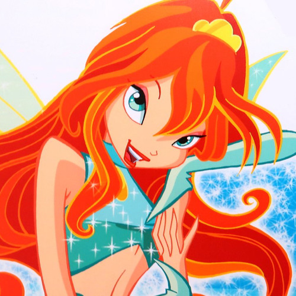
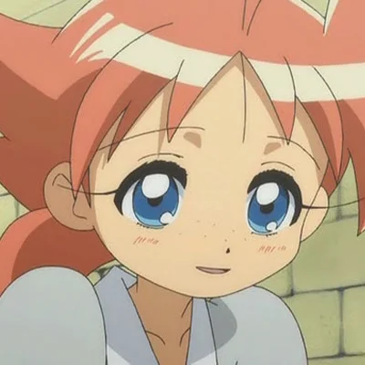

Sailor Moon
Usagi Tsukino (aka Sailor Moon) is a 14 year old magical girl and the main character from the popular anime series Sailor Moon She’s depicted as clumsy, a crybaby and a little immature. Despite this she’s a lovable character and the leader of the Sailor Scouts.
Mew Ichigo
Ichigo Momomiya is a 12/13 year old girl that was infused with the DNA of an iriomote cat giving her the alter ego: Mew Ichigo! She’s the main character of the anime Tokyo Mew Mew. Her catchphrase is: “For the future of Earth, I'll be of service! ~Nya!”.
Sakura
Sakura Kinomoto might be the youngest on this list, being only 9 years old. Unlike most magical girls, she doesn’t have a uniform she transforms into, instead her friend took it upon herself to give her a new cute outfit for her to wear every time she uses her magical powers. She and her eventual love interest, both shared the same crush.
Bloom
Bloom is the main character of Winx, the only non-Japanese show in this list as it is actually Italian-American. Bloom is a 16 year old fairy who grew up on earth with her foster parents, without any idea of her actual powers. Until she met Stella, another fairy, and her journey in Magix begins.
Madoka
Madoka Kaname is a 14 year old girl who gets invited to become a magical girl in one of her dreams. Despite being the main character of the magical girl show “Puella Magi Madoka Magica” she isn’t a magical girl for the most part of the series.